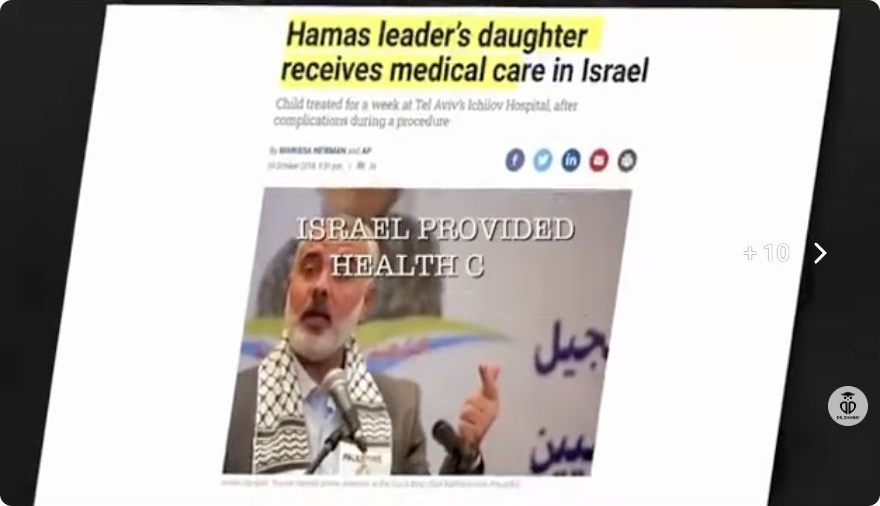

3:20 · 1 OPERA
Know the facts: The choice to look at reality is a moral choice.
Il contenuto del filmato
Montaggio politico esaminato attraverso un campione di immagini e testi incorporati. La sua tesi è una condanna di Hamas e delle reazioni presentate come sostegno o relativizzazione delle violenze: i cartelli iniziali respingono una lettura simmetrica della guerra e la chiusura invita a dire la verità. La sequenza accosta abitazioni danneggiate, persone riunite a un festival, immagini di violenza e un’intervista sottotitolata.
Leggi la sintesi completaRiduci la sintesi
Fra i materiali compare un articolo del Times of Israel del 2014 sulle cure ricevute in Israele dalla figlia di un dirigente di Hamas, usato nel montaggio come termine di contrasto. Seguono didascalie sulle vittime e sui rapimenti, un paragone con gli Einsatzgruppen, scene di reazioni pubbliche e un mezzo militare con bandiera israeliana. Le accuse, la selezione degli episodi e l’analogia storica appartengono all’argomentazione del video. L’interesse della lettura è il modo in cui il montaggio cerca di trasformare l’atto di guardare immagini di violenza in una presa di posizione morale. La scheda descrive questa costruzione retorica. Restano da verificare provenienza, contesto completo e identità nei singoli spezzoni; i sottotitoli incorporati e le didascalie sono distinti dal sonoro, che qui non è stato trascritto o ascoltato.
Opere e riferimenti

Hamas leader’s daughter receives medical care in Israel
Note sul riferimento
Intestazione dell’articolo nel montaggio del video: The Times of Israel, 19 ottobre 2014; intestazione ripresa nel montaggio a 0:45.
L’immagine proviene dal montaggio del video e include evidenziazioni e sovrimpressioni che non appartengono all’articolo originale. Non costituisce una fotografia clinica né una verifica autonoma delle identità delle persone raffigurate.
Titolo e sottotitolo dell’articolo visibili nel campione45s; firma e data 2014 verificate nella pagina primaria, distinte dalla data 2023 del montaggio. Immagine del montaggio con evidenziazioni e sovrimpressioni; non costituisce una prova clinica indipendente.
La descrizione riguarda alcune immagini del filmato. Il sonoro non è verificato; le didascalie visibili non attestano le parole pronunciate.